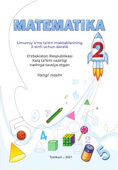

M22-sinf o'quvchilari uchun rasmiy matematika darsligi.
Bu kitob O'zbekiston umumiy o'rta ta'lim maktablarining 2-sinfi uchun mo'ljallangan matematika darsligi bo'lib, 2021-yilda Respublika ta'lim markazi tomonidan nashr etilgan. Darslik 100 ichida qo'shish va ayirish, geometrik shakllar, ko'paytirish, bo'lish, tenglamalar va ma'lumotlar bilan ishlash kabi mavzularni o'z ichiga oladi. Kitob UNICEF bilan hamkorlikda tayyorlangan va O'zbekiston Respublikasi Xalq ta'limi vazirligi tomonidan tavsiya etilgan.